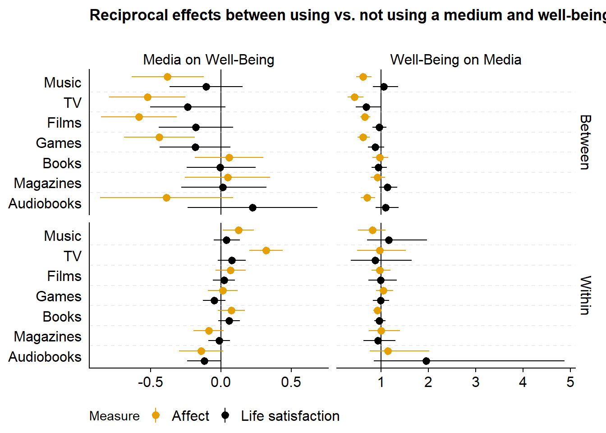

5 Synthesis
5.1 Create a summary graph
In the Analysis section, I ran 28 models, each with four parameters. That makes it hard to get an overview of general trends and differences. Here, I try to visually present those findings and produce a figure that gives a nice overview.
First, I’ll extract all model parameters from the models. Each one is quite large, so loading them all at once will make my RAM explode. Instead, I’ll iterate over each model:
- Load the model
- Extract the estimates
- Wrangle and relabel them
- Remove model from workspace again
The below took about five minutes on my laptop.
# get all model names
well_being_indicators <- c("affect", "life")
media <-
c(
"music",
"films",
"tv",
"games",
"books",
"magazines",
"audiobooks"
)
models1 <-
paste(rep(well_being_indicators, each = length(media)), media, sep = "_")
models2 <-
paste(rep(media, each = length(well_being_indicators)), well_being_indicators, sep = "_")
models <- c(models1, models2)
get_model_estimates <-
function(
models
){
# set up the data set
estimates <-
tibble(
Predictor = character(),
Outcome = character(),
`Use vs. Time` = character(),
`Between vs. Within` = character(),
Estimate = double(),
`Lower CI` = double(),
`Upper CI` = double()
)
for (model_name in models) {
# super lame progress bar
print(
paste0(
"Currently working on: ",
model_name,
". Progress: ",
which(models==model_name),
"/",
length(models)
)
)
# load model
m <- read_rds(here("models", paste0(model_name, ".rds")))
# get predictor in this model
predictor <-
str_remove(model_name, "_.*") # only take what's before the underscore
# first we get the fixed effects
dat <-
# get fixed effects
fixef(m) %>%
# turn into a tibble and keep rownames because they are the parameter names
as_tibble(., rownames = "Effect") %>%
# outcome will be the second part of the model name after the underscore
mutate(
Outcome = model_name,
Outcome = str_remove(Outcome, ".*_")
) %>%
# no need for intercept parameters
filter(!str_detect(Effect, "Intercept"))
# if statement to see how to rename model estimates
if (predictor %in% c("affect", "life")){
dat <-
dat %>%
# we need to rename the parameters so that their patterns fit with a model that has a media predictor
mutate(
# life_satisfaction adds an extra underscore which breaks the rest of the code below, so I'll just replace it here (if it's affect, it won't matter)
Effect = str_replace(Effect, "life_satisfaction", "life"),
Effect = case_when(
# if it has hu(rdle) in it, we remove that and replace it with "use"
str_detect(Effect, "hu") ~ str_replace(
str_remove(Effect, "hu_"),
"_", "_use_"
),
# if it doesn't have hu(rdle), we know the parameter is about time
TRUE ~ str_replace(Effect, "_", "_time_")
)
)
}
# next, let's finish the wrangling
dat <-
dat %>%
# turn the Effect parameters into three separate variables
separate(
Effect,
into = c("Predictor", "Use vs. Time", "Between vs. Within"),
sep = "_"
) %>%
# renaming and selecting (only keep variables we'll need for plotting)
select(
Predictor,
Outcome,
`Use vs. Time`,
`Between vs. Within`,
Estimate,
`Lower CI` = Q2.5,
`Upper CI` = Q97.5
)
# then add those rows to the tibble we'll return
estimates <-
bind_rows(
estimates,
dat
)
# clear workspace
rm(m)
gc()
}
# some wrangling on final data set
estimates <-
estimates %>%
mutate(
# turn life into Life Satisfaction
across(
Predictor:Outcome,
~ str_replace(.x, "life", "Life Satisfaction")
),
# factor levels to upper case
across(
Predictor:`Between vs. Within`,
str_to_title
),
# use factor still has "Used" instead of "Use" as a level
`Use vs. Time` = str_replace(`Use vs. Time`, "Used", "Use"),
# turn into factors
across(
Predictor:`Between vs. Within`,
as.factor
)
)
# and return
return(estimates)
}
# apply function
get_model_estimates(models) -> estimates## [1] "Currently working on: affect_music. Progress: 1/28"
## [1] "Currently working on: affect_films. Progress: 2/28"
## [1] "Currently working on: affect_tv. Progress: 3/28"
## [1] "Currently working on: affect_games. Progress: 4/28"
## [1] "Currently working on: affect_books. Progress: 5/28"
## [1] "Currently working on: affect_magazines. Progress: 6/28"
## [1] "Currently working on: affect_audiobooks. Progress: 7/28"
## [1] "Currently working on: life_music. Progress: 8/28"
## [1] "Currently working on: life_films. Progress: 9/28"
## [1] "Currently working on: life_tv. Progress: 10/28"
## [1] "Currently working on: life_games. Progress: 11/28"
## [1] "Currently working on: life_books. Progress: 12/28"
## [1] "Currently working on: life_magazines. Progress: 13/28"
## [1] "Currently working on: life_audiobooks. Progress: 14/28"
## [1] "Currently working on: music_affect. Progress: 15/28"
## [1] "Currently working on: music_life. Progress: 16/28"
## [1] "Currently working on: films_affect. Progress: 17/28"
## [1] "Currently working on: films_life. Progress: 18/28"
## [1] "Currently working on: tv_affect. Progress: 19/28"
## [1] "Currently working on: tv_life. Progress: 20/28"
## [1] "Currently working on: games_affect. Progress: 21/28"
## [1] "Currently working on: games_life. Progress: 22/28"
## [1] "Currently working on: books_affect. Progress: 23/28"
## [1] "Currently working on: books_life. Progress: 24/28"
## [1] "Currently working on: magazines_affect. Progress: 25/28"
## [1] "Currently working on: magazines_life. Progress: 26/28"
## [1] "Currently working on: audiobooks_affect. Progress: 27/28"
## [1] "Currently working on: audiobooks_life. Progress: 28/28"Alright, now let’s see in which way the plot makes the most sense.
First, I need to do some wrangling on the estimates data frame.
Then I facet by the direction of the effect and time and use.
Not sure I like this: Four columns might be a bit much.
estimates <-
estimates %>%
mutate(
# factor variable that shows the direction of effect
Direction = if_else(Predictor %in% str_to_title(media), "Media on Well-Being", "Well-Being on Media"),
# factor variable that shows which measure to facet from
Measure = as.factor(if_else(Predictor == "Life Satisfaction" | Outcome == "Life Satisfaction", "Life Satisfaction", "Affect")),
# for which predictor/outcome the effect is visualized
Effect = as.factor(if_else(Predictor %in% str_to_title(media), Predictor, Outcome)),
# the effect on the hurdle gave us odds ratios of zero, so I reverse those to tell use odds of having used medium
across(
Estimate:`Upper CI`,
~ case_when(
Direction == "Well-Being on Media" & `Use vs. Time` == "Use" ~ exp(-.x), # effect on hurdle
Direction == "Well-Being on Media" & `Use vs. Time` == "Time" ~ exp(.x), # odds for increased time
TRUE ~ .x
)
),
# the line for null effect (0 for gaussian, 1 for hurdle gamme)
Line = if_else(Direction == "Media on Well-Being", 0, 1),
# rename levels
Effect = fct_recode(
Effect,
"TV" = "Tv",
"Life satisfaction" = "Life Satisfaction"
),
Measure = fct_recode(
Measure,
"Life satisfaction" = "Life Satisfaction"
),
# reorder factor levels
Effect = fct_relevel(
Effect,
c(
"Audiobooks",
"Magazines",
"Books",
"Games",
"Films",
"TV",
"Music"
)
)
)
ggplot(
estimates %>%
arrange(Measure),
aes(
x = Estimate,
y = Effect,
color = Measure
)
) +
geom_vline(
aes(
xintercept = Line
)
) +
geom_pointrange(
aes(
xmin = `Lower CI`,
xmax = `Upper CI`
),
position = position_dodge2(.6, reverse = TRUE)
) +
facet_grid(
`Between vs. Within` ~ Direction + `Use vs. Time`,
scales = "free_x"
) +
scale_colour_manual(values=cb_palette) +
scale_fill_manual(values = cb_palette) +
theme(
axis.title.y = element_blank(),
axis.ticks.y = element_blank(),
axis.line.y = element_blank(),
strip.background.x = element_blank(),
strip.background.y = element_blank()
) -> figure6.1
figure6.1 This looks better, in my opinion.
Shapes and colors can be tough, but I think it’s easier to read than having four columns.
Then again, it’s quite a lot to take in, so maybe it’s best to split one of the facets into two plots.
This looks better, in my opinion.
Shapes and colors can be tough, but I think it’s easier to read than having four columns.
Then again, it’s quite a lot to take in, so maybe it’s best to split one of the facets into two plots.
ggplot(
estimates %>%
mutate(
# ggplot weirdly shows the first level of the legend second on the graph, so I reverse level order and then reverse the legend order below with the guides command
`Use vs. Time` = fct_relevel(
`Use vs. Time`,
"Time",
"Use"
),
Measure = fct_relevel(
Measure,
"Life satisfaction",
"Affect"
)
),
aes(
x = Estimate,
y = Effect,
color = `Use vs. Time`,
shape = Measure,
)
) +
geom_vline(
aes(
xintercept = Line
)
) +
geom_pointrange(
aes(
xmin = `Lower CI`,
xmax = `Upper CI`
),
position = position_dodge2(1),
size = 0.5
) +
geom_hline(
aes(
yintercept = if_else(as.numeric(Effect) == 1, 0, as.numeric(Effect) - 0.5)
),
color = "lightgrey",
linetype = "dashed",
alpha = 0.45
) +
facet_grid(
`Between vs. Within` ~ Direction,
scales = "free_x"
) +
scale_colour_manual(values=c("#000000", "#E69F00")) +
scale_fill_manual(values = c("#000000", "#E69F00")) +
scale_shape_manual(values=c(15, 16)) +
guides(
color = guide_legend(reverse = TRUE),
shape = guide_legend(reverse = TRUE)
) +
theme(
axis.title.y = element_blank(),
axis.title.x = element_blank(),
axis.ticks.y = element_blank(),
# axis.line.y = element_blank(),
strip.background.x = element_blank(),
strip.background.y = element_blank(),
legend.position = "bottom",
) -> figure6.2
figure6.2
I’ll create one plot for use and one plot for time effects. I’ll start with a plot for use vs. nonuse.
ggplot(
estimates %>%
mutate(
`Use vs. Time` = fct_relevel(
`Use vs. Time`,
"Time",
"Use"
),
Measure = fct_relevel(
Measure,
"Life satisfaction",
"Affect"
)
) %>%
# only use
filter(`Use vs. Time` == "Use"),
aes(
x = Estimate,
y = Effect,
color = Measure
)
) +
geom_vline(
aes(
xintercept = Line
)
) +
geom_pointrange(
aes(
xmin = `Lower CI`,
xmax = `Upper CI`
),
position = position_dodge2(1),
size = 0.5
) +
geom_hline(
aes(
yintercept = if_else(as.numeric(Effect) == 1, 0, as.numeric(Effect) - 0.5)
),
color = "lightgrey",
linetype = "dashed",
alpha = 0.45
) +
facet_grid(
`Between vs. Within` ~ Direction,
scales = "free_x"
) +
scale_colour_manual(values=c("#000000", "#E69F00")) +
scale_fill_manual(values = c("#000000", "#E69F00")) +
scale_shape_manual(values=c(15, 16)) +
guides(
color = guide_legend(reverse = TRUE),
shape = guide_legend(reverse = TRUE)
) +
ggtitle("Reciprocal effects between using vs. not using a medium and well-being\n") +
theme(
title = element_text(size = 11),
axis.title.y = element_blank(),
axis.title.x = element_blank(),
axis.ticks.y = element_blank(),
# axis.line.y = element_blank(),
strip.background.x = element_blank(),
strip.background.y = element_blank(),
legend.position = "bottom",
) -> figure6.3
figure6.3
ggsave(
filename = here("figures", "figure6.png"),
plot = figure6.3,
width = 21 * 0.9,
height = 29.7 * 0.7,
units = "cm",
dpi = 300
)Then a plot for time effects.
# function for different breaks on x-axis per facet
my_breaks <-
function(x) {
if (max(x) > 1){
c(0.9, 1, 1.1)
} else {
c(-0.2, 0, 0.2)
}
}
ggplot(
estimates %>%
mutate(
`Use vs. Time` = fct_relevel(
`Use vs. Time`,
"Time",
"Use"
),
Measure = fct_relevel(
Measure,
"Life satisfaction",
"Affect"
)
) %>%
# show only
filter(`Use vs. Time` == "Time"),
aes(
x = Estimate,
y = Effect,
color = Measure
)
) +
geom_vline(
aes(
xintercept = Line
)
) +
geom_pointrange(
aes(
xmin = `Lower CI`,
xmax = `Upper CI`
),
position = position_dodge2(1),
size = 0.5
) +
geom_hline(
aes(
yintercept = if_else(as.numeric(Effect) == 1, 0, as.numeric(Effect) - 0.5)
),
color = "lightgrey",
linetype = "dashed",
alpha = 0.45
) +
facet_grid(
`Between vs. Within` ~ Direction,
scales = "free_x"
) +
scale_x_continuous(breaks = my_breaks) +
scale_colour_manual(values=c("#000000", "#E69F00")) +
scale_fill_manual(values = c("#000000", "#E69F00")) +
scale_shape_manual(values=c(15, 16)) +
guides(
color = guide_legend(reverse = TRUE),
shape = guide_legend(reverse = TRUE)
) +
ggtitle("Reciprocal effects between time spent using a medium and well-being\n") +
theme(
title = element_text(size = 11),
axis.title.y = element_blank(),
axis.title.x = element_blank(),
axis.ticks.y = element_blank(),
# axis.line.y = element_blank(),
strip.background.x = element_blank(),
strip.background.y = element_blank(),
legend.position = "bottom",
) -> figure7
figure7 
ggsave(
filename = here("figures", "figure7.png"),
plot = figure7,
width = 21 * 0.9,
height = 29.7 * 0.7,
units = "cm",
dpi = 300
)5.2 Full table of estimates
Some readers may not want to go through the entire analysis section to look for a coefficient. Therefore, we provide the full estimates in one table here. Table 5.1 shows all estimates.Figure 5.1: Estimates of all models
5.3 Interpreting the results
Points represent the mean of the posterior distribution of the parameter. Lines represent 95% Credible Intervals of the same posterior distribution. For both of the last two figures, the columns display reciprocal effects: On the left-hand side, coefficients are of the Gaussian models, meaning they represent an effect on the 0 to 10 well-being scale. On the right, coefficients are of the hurdle gamma model, meaning they represent odds of using a medium at all (hurdle part) and time spent using a medium (gamma part). The top part shows between-person effects. The bottom part shows within-person effects.
If we take music as an example: In the top left of the second to last figure, we see the between-person effects of listening to music vs. not listening to music on affect and life satisfaction. Across the entire sample and all waves, the model estimated that someone who listens to music, compared to someone who does not listen to music, reports feeling somewhat worse on affect, but not on life satisfaction. That correlation is mirrored on the top right that shows effects of affect and life satisfaction, across all waves, on whether someone listens to music vs. not. Mirroring the left-hand columns, someone who feels one point better than someone else on the 0 to 10 affect measure has lower odds of listening to music compared to someone else. The bottom left shows within-effects of listening to music: Someone who goes from not listening to music to listening to music does feel somewhat better a week later. Conversely (on the bottom right), if a person feels one point better on affect than they typically do, they do not have higher odds of listening to music a week later (golden circle).
In the last figure, we see the effects of time spent listening to music. The top left corner shows that one hour more music listening than someone else is only weakly related to well-being; conversely, scoring one point higher on well-being than someone else is only weakly related to the odds of spending more time listening to music. At the within-person level (bottom left), when a person listens to one hour more than they typically do, they felt slightly better, but the posterior included zero as well as negative effects. Likewise, if someone scored on point higher on the affect scale than they typically do, they do not have higher odds of listening to more music (bottom right).
5.4 Take-aways
- The effects we observe are on the between-level (top left): Those who use a medium also feel worse, generally. But: This only applies to use and not time: Once people use a medium, they’re not worse off than someone who spends less time with a medium.
- Any differences happen on the less stable affect, not on life satisfaction.
- These differences don’t seem to differ much per medium.
- On the within-level, there isn’t much going on: Most effects are super small and include zero as a plausible effect size.